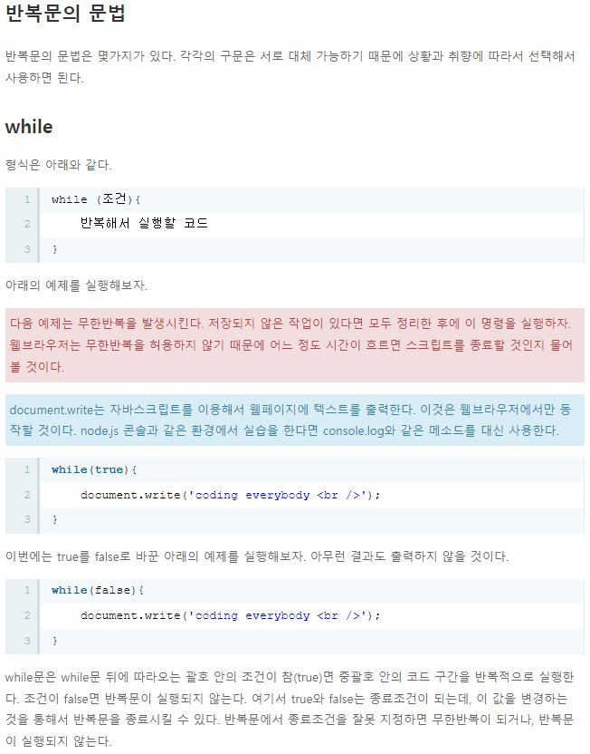

Javascript
-조건문이란: 주어진 조건에 따라서 에플리케이션을 다르게 동작하도록 하는 것이다.
if: 뒤의 괄호에 조건이 오고 , 조건이 될 수 있는 값은 boolean이다
예 제
아래 예제의 실행결과는 'result : true'다. if 뒤에 true가 왔기 때문이다.
if(true){
alert('result : true');
}
-------------------------------------------------------------------------------
다음 예제는 아무것도 출력하지 않을 것이다. if 뒤에 false가 왔기 때문이다.
if(false){
alert('result : true');
}
else if
else if를 이용하면 조건문을 좀 더 풍부하게 할 수 있다. 아래 예제를 보자. 결과는 2다.
if(false){
alert(1);
} else if(true){
alert(2);
} else if(true){
alert(3);
} else {
alert(4);
}
중요 : else if는 좀 더 다양한 케이스의 조건을 검사할 수 있는 기회를 제공한다. else if의 특징은 if나 else와는 다르게 여러개가 올 수 있다는 점이다.
else if의 모든 조건이 false라면 else가 실행된다. else는 생략 가능하다.
예 시 코 드
var id = prompt('아이디를 입력해주세요.');
if(id==='yeong'){
var password = prompt('비밀번호를 입력해주세요');
if(password ==='111111'){
alert('로그인 하셨습니다.'+id+ '님 반갑습니다.');
} else {
alert('비밀번호가 다릅니다');
}
}else {
alert('아이디가 일치하지 않습니다.');
}
예 시 코 드
id = prompt('아이디를 입력해주세요.');
password = prompt('비밀번호를 입력해주세요.');
if(id=='yeong' && password=='111111'){
alert('인증 했습니다.');
} else {
alert('인증에 실패 했습니다.');
}
-------------------------------------------------
or 연산자 : '||'는 '||'의 좌우항 중에 하나라도 true라면 true가 되는 논리 연산자다.
|기호는 통상 엔터키 위에 있는 원화표시 키를 쉬프트와 함께 누르면 입력된다. or 연산자라고 부른다. 다음 예를 보자.
결과는 1,2,3이 출력된다. 마지막 조건문의 '||'는 좌항과 우항이 모두 false이기 때문에 false가 된다.
not 연산자 : '!'는 부정의 의미로, Boolean의 값을 역전시킨다. true를 false로 false를 true로 만든다.
not 연산자라고 부른다. 아래의 결과는 4다.
